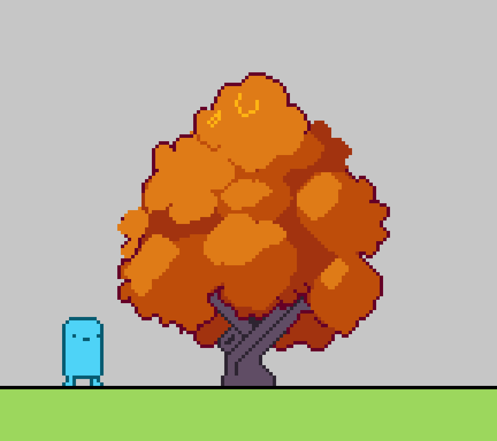

So, my first devlog was over two months ago. Everytime I tried to set aside a bit of time to write, I found myself working more on my project instead. I suppose that's not the worst reason why I haven't made more of these, but still. I think it's good to write my thoughts out and having something to look back on. Who knows, some people might even find these bits of insight interesting. Either way, I'm gonna try my best to make devlogs more frequently in the future.
By the way, I recently released a new build of my prototype! You can try it out here!
the maple tree incident
I spent a lot of time brainstorming after the previous devlog. The goal was to figure out an artstyle that looks distinct and is pretty heavily stylized. I was unable to settle on anything concrete so I decided to just start making stuff to see what sticks.
I wanted to create a new autumn themed background, so that meant drawing maple tree. Unfortunately, things did not go very smoothly. After hours and hours of work, tons of trial and error, and a whole bunch of blood, sweat, and tears, I finally produced one decent maple tree sprite.

The tree looks okay, but the entire process reminded me again just how slow I am at drawing pixel art. I don't have the time to spend 20 hours on every single asset (yes, the tree really did take me 20 hours of work to sprite). It would take some time to break those habits but sticking to my perfectionist ways would only cause me to waste more time down the line. It's always easier to revise than to strike perfection the first time through.
Thankfully making the rest of the trees didn't take nearly as long. I already had an idea for the art style and color palette so I quickly* made a couple tree variants with different shapes.
*still took a while but nowhere near 20 hours
grass shader
The grass shader I covered in the previous devlog is still probably the coolest thing I've added to the game. Ususally the backgrounds of pixel art games are just sprites from a tileset. That means how good a game looks comes entirely down to the quality of the sprites. Owlboy and Blasphemous have extremely high quality pixel art, which makes them look gorgeous even without the need for extra effects - things like bloom or interactive foliage.
Unfortunately, I'm not capable of producing pixel art anywhere near that level. The grass shader lets me make my game look a lot nicer without the need to draw incredible pixel art. It's a similar concept with the falling leaves - a simple effect that still adds to how the game looks.
There were a couple of problems with the previous iteration of the grass shader. The z-ordering was sometimes off, how it interacts with the player looked weird, and the shape of each blade of grass was just a little wonky. Like it kinda looks like grass, but something about it was just off. I spent some time messing with the shader and changing how the grass was drawn to make it look more like grass.
the rest
With most of the new autumn-themed assets done, I spent a couple days touching up some other miscellaneous things. The goal was to have a visual vertical slice of the game that ideally wouldn't contain too many placeholder assets. The old weapons in the game didn't really fit with how the game looked, so I created a new revolver. The firing and reload animation aren't anything too fancy, but it fit the game well enough.
I also animated a new walk cycle for the player. The old one looked pretty static and I wanted to add some liveliness to how the player looks. Figuring out the leg movements were a little tricky, but I think it turned out well!
enemy sprites
I've had a hard time with enemy designs during this project. I want them to look nice and animated while still having simple enough designs that it would be feasible for me to sprite. The old designs were all really basic since they were meant to be placeholders. Games like Brotato only have minimal enemy animations - walking is depicted by squashing and stretching the base sprite. I had tested a similar effect for my game's enemies before but it didn't look right with the pixel art.
Eventually I came across a tweet for the game Dagger Froggy. The art style isn't too similar to my game but I really liked how the enemies were animated. Specifically, the walking animations looked good but also seemed simple enough that even I could animate something like it. I took that inspiration and made a little shrub enemy!
bloodstains
The next thing I did was add a bunch of visual effects for the gameplay. Things like hitsparks and little poof animations make the combat feel more flashy and immediately improved the feel of the gameplay. One effect in particular I wanted to focus on were the bloodstains that appear after killing an enemy. Originally I was just using squares for this effect. I had implemented a bit of logic to make their spawns random so they didn't look too bad, but I knew they could be improved.
This time, I was heavily inspired by a game called Fruits of Fury by PARANOIA. I had no chance of making all the pixel art in my game look anywhere as good, but I thought I could at least replicate just the splatter effect. PARANOIA was kind enough to answer some questions I had about how the effect was done and after a couple days I was eventually able to create something similar.
back to grass
At this point I was ready to make an actual level out of all the assets I'd been working on. This was also when I decided to go back to using a green background. The game would still have autumn rooms, but I had realized something while working so heavily on all the maple themed assets. At the end of the day a green grassy area - as standard as it may be - is just really appealing. They're a naturally pleasing aesthetic and I thought it'd be better if that was what I themed the first room after.
Thankfully I could reuse pretty much all of the stuff I'd made. I recolored the trees, grass, and programmed some stuff to randomize their colors. I also made a cool black barrier for the edge of the room using particle effects.
With a proper room finished, I made some enemy waves to populate the level. I also went over some of the bullet sprites, improved the dust of the player's walk, and smoothed out the screenshake effects. Admittedly the gameplay itself is still mostly the same as the previous build, but everything looks a whole lot better.
And that's everything caught up! This doesn't cover everything I worked on in the past two months - I had to gloss over and skip some things so this devlog wouldn't become any longer than it already is. I've got lots of cool stuff planned for the next few weeks. I'm gonna start designing the UI and actually adding some roguelite elements to the game too. I'll also be looking into getting a Steam page for the game up. Hopefully the next devlog I make won't take two months...
At the very least, the next build I post should have some pretty sick stuff.